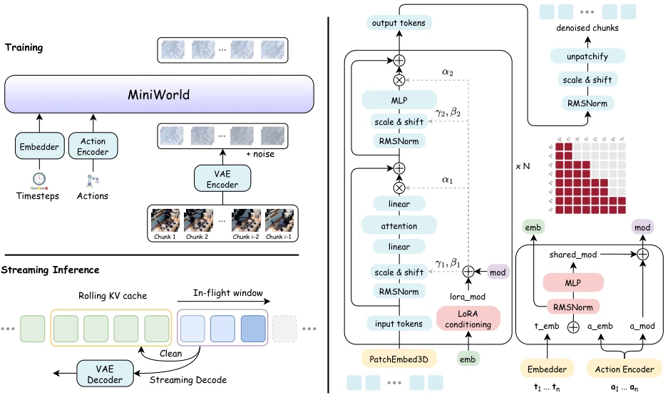
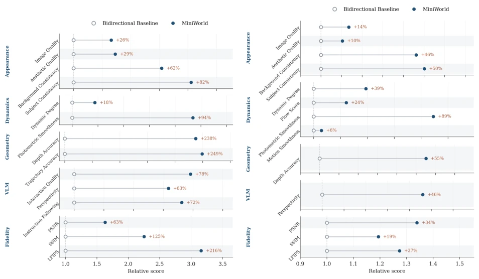
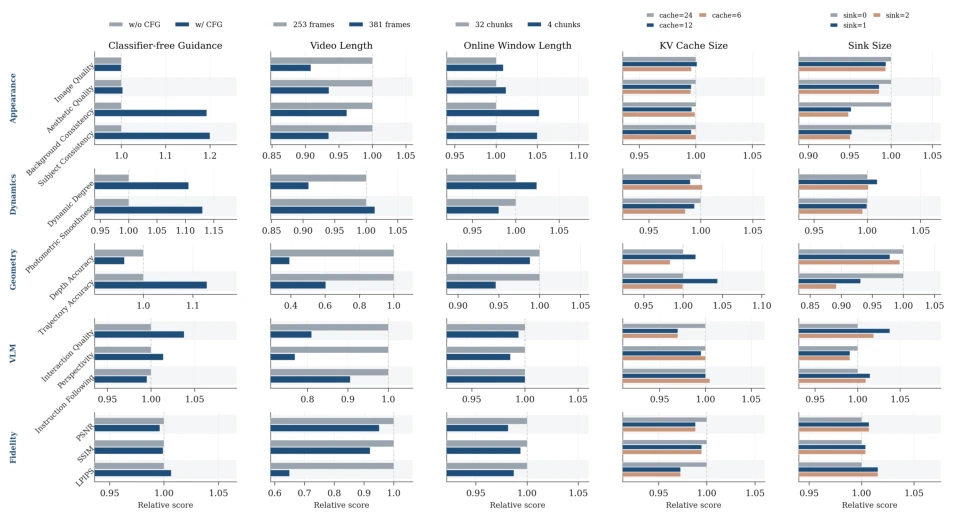
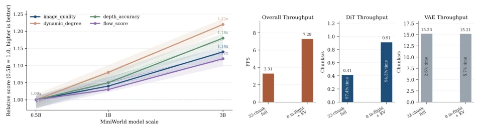

This paper claims to "democratize" video world model training, which sounds like a giveaway to the research community. Indeed, MiniWorld has lowered the training threshold to a level where it can be completed on a single 8-GPU server within a few days, which is a lifeline for most large companies without budgets. But don't get too excited too soon; essentially, it just masters Diffusion Forcing and block causal attention, with no magic involved. Compared to giants like Cosmos or Genie with hundreds of billions of parameters, MiniWorld is more like a refined "toy"; although it can run long sequences, geometric consistency and long-range drift issues still exist. Its greatest contribution is not SOTA performance, but providing a transparent, reproducible baseline, so later researchers don't have to guess the tricks of black-box fine-tuning. However, the authors honestly admit that this model still collapses in complex interaction scenarios, so don't expect to deploy it directly for robots; it is more suitable for studying the algorithms of causal memory and long-range prediction themselves.
Current research on Video World Models mostly relies on fine-tuning or distilling pre-trained bidirectional video diffusion models, such as Genie [3], Cosmos [21], and SkyReels-V2 [26]. Although this approach leverages powerful visual generation capabilities, it has two fatal flaws: first, structural mismatch between training and inference, where bidirectional pre-training cannot perfectly adapt to causal streaming inference; second, high cost, requiring complex training pipelines and massive computing power. Furthermore, the community lacks a lightweight, fully reproducible from-scratch training baseline. MiniWorld aims to solve this problem by streaming world models trained from scratch, lowering research barriers, avoiding reliance on proprietary datasets and complex post-training techniques, and focusing on the essential issues of causal modeling and long-range state prediction.
MiniWorld's overall process is based on the latent space of a pre-trained Video VAE, employing Rectified Flow for modeling. The core architecture is Block-causal Video DiT, dividing video sequences into time chunks, with bidirectional attention within chunks and causal attention between chunks. In terms of training strategy, it introduces a chunk-wise non-decreasing noise scheduling based on Diffusion Forcing, ensuring early chunks are cleaner, conforming to streaming inference states. It adopts a two-stage continuous training: first learning local dynamics on short sequences (21/46 frames), then continuing training on long sequences (125/253 frames) to enhance long-range context. The inference stage uses Rolling KV cache and pipeline async denoising, limiting active window size to achieve long sequence generation under bounded computation. Additionally, it enhances action conditioning via AdaLN-LoRA, supporting mixed training of Image-to-Video and Video-to-Video modes. The RoPE Re-shifting mechanism solves the position encoding extrapolation problem during KV cache updates, ensuring queries and key-value pairs always remain within the training distribution range.

Figure 1 Overview of MiniWorld. Videos are encoded into latent representations by a pretrained Video VAE, while actions are converted into latent-frame-aligned conditioning signals. MiniWorld partitions the latent sequence into temporal chunks and trains a block-causal Video DiT with chunk-wise non-decreasing noise schedules. During streaming inference, future chunks are denoised asynchronously, completed chunks are committed to a rolling KV cache as persistent history, and the active denoising window remains bounded as generation proceeds.
Experiments were conducted on two benchmarks: DROID (robot manipulation) and RealEstate10K (camera trajectory), with the comparison baseline being bidirectional short video sliding window prediction. Evaluation metrics cover PSNR, SSIM, LPIPS, and WorldArena-style geometry, dynamics, and function quality. Results show that MiniWorld significantly outperforms the baseline in geometric accuracy (Depth Accuracy +238%) and fidelity, proving it can better maintain robot-object geometric relationships. Ablation studies show that Rolling KV cache can effectively maintain long-range quality without increasing computational cost, while CFG mainly improves appearance rather than efficiency. Although geometric errors still accumulate under long sequences, there is significant improvement compared to the baseline. Model scaling analysis shows that increasing parameters monotonically improves dynamics and geometric performance, validating the architecture's effectiveness. Throughput tests show that using KV cache can increase output FPS by 2.2 times and reduce first block latency by 15 times, proving the practicality of engineering optimizations.

Figure 2 Main results on DROID and RealEstate10K. The bidirectional short-video baseline is normalized to 1. For error metrics, the relative ratio is inverted so that larger values indicate better performance.

Figure 3 Quality ablations on DROID. Each column compares one inference factor while keeping the remaining settings fixed; the left setting in each column is normalized to 1.

Figure 4 Scaling and throughput analyses of MiniWorld.